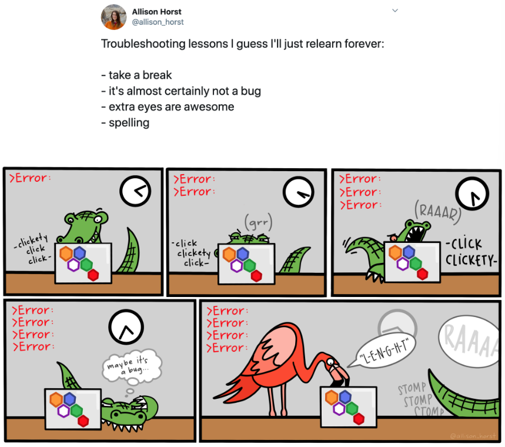
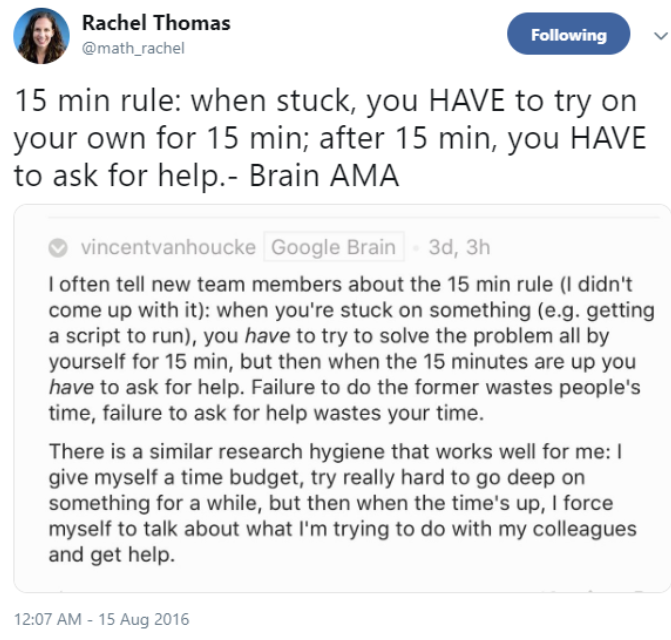

Syllabus
This course is an introduction to using Python to learn from data. It aims to teach useful skills: importing, data filtering and manipulation, visualization, inferential statistics, and data modelling.
Business decisions are often too complex to be made by intuition alone. We need to communicate the structure of our reasoning, defend it to adversarial challenge and deliver presentations that show we have done a thorough analysis. We also need to understand and make use of various sources of data, organise the inputs of experts and colleagues, and provide analytical support to our reasoning. The overall objective of this course is to equip you with analytical thinking and techniques that help you be more effective in these tasks. The goal is to teach you how to perform data analysis to support decision-making, build simple but powerful models that test your intuitive reasoning, develop managerial thinking and facilitate the communication of your recommendations.
By the end of the course you should be able to identify the areas where data analytics can add the most value, select appropriate types of analyses and apply them in a small-scale, quick-turnaround but high-impact fashion.
Learning Objectives
- Articulate, extract and analyse valuable information from data
- Understand and quantify the accuracy of sample evidence
- Build regression models to describe and predict complicated outcomes
- Communicate quantitative analysis and recommendations effectively
- Be able to use Python effectively for data analysis and decision making
Required Texts or Readings
We will be drawing on the following online Textbooks:
Assessment Policy
Grades will be based on the following:
| Assessment Type | Due | Weight | Group/Individual |
|---|---|---|---|
| Homework (3*5%) | 29th Aug, 3rd Sep, 8th Sep | 15% | Group |
| Group Project | 11 Sep 2024 | 30% | Group |
| Final Exam, timed | 20 Sep 2024 | 55% | Individual |
Assignments are due by 11:59 PM UTC on the day they are due.
Detailed Course Structure
Here is a detailed schedule for this class.
Words of Encouragement
Learning Python can be challenging at first— it’s like learning a new language, just like Spanish, French, or Chinese. Hadley Wickham—the chief data scientist at RStudio anf the author of some amazing R language packages (note: we will not be doing R, only Python) ggplot2—made this wise observation :
It’s easy when you start out programming to get really frustrated and think, “Oh it’s me, I’m really stupid,” or, “I’m not made out to program.” But, that is absolutely not the case. Everyone gets frustrated. I still get frustrated occasionally when writing R code. It’s just a natural part of programming. So, it happens to everyone and gets less and less over time. Don’t blame yourself. Just take a break, do something fun, and then come back and try again later.
Even experienced programmers find themselves bashing their heads against seemingly intractable errors.
 # The 15 Minute rule
It’s good practice to follow the 15 minute rule. If you encounter a problem in your work, spend 15 minutes troubleshooting the problem on your own; Google, Python Documentation, and StackOverflow are good places to look for answers. So if you google your error message, you will find that 99% of the time someone has had the same error message and the solution is on stackoverflow.
However, if after 15 minutes you still cannot solve the problem, please ask for help – post a question on Slack, email me, reach out to a friend.

15 min rule: when stuck, you HAVE to try on your own for 15 min; after 15 min, you HAVE to ask for help. - Brain AMA